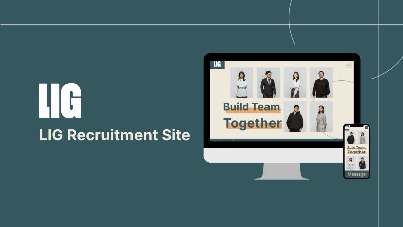
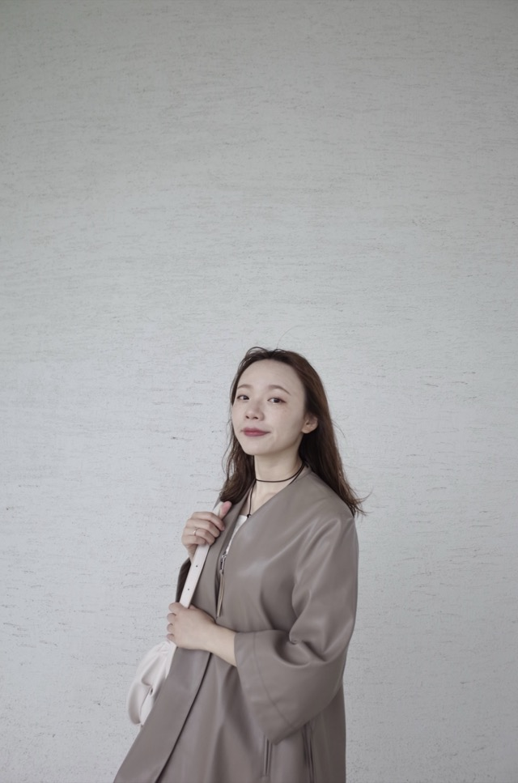

UI/UX DESIGNER · TAIWAN
你好，我是王俐絜 Louise Wang
讓複雜更清楚，
讓體驗更直覺。
從理解使用者出發，結合介面設計與研究，
讓網站、App 與數位產品，成為更好用的日常。
以同理心思考，以設計讓想法成形。

清晰的介面，
來自對人的理解。
來自對人的理解。
產品介面設計使用者研究設計系統響應式網頁
01 / SELECTED WORK
每一個專案，
都是一次體驗的推進。
從品牌網站到行動 App，
探索資訊、視覺與互動之間的平衡。

02 / ABOUT ME
設計，從理解人開始。
我喜歡把複雜的問題，
轉化成清楚、直覺的使用體驗。
我是王俐絜 Louise Wang，擁有約 3 年設計經驗，專注數位產品、軟硬體介面與設計系統。從設備控制介面到網站與 App，我持續探索科技與人的連結。
外文與日本網頁設計的學習背景，讓我習慣從不同文化與使用情境理解問題。我相信好的設計，需要在使用者需求、商業目標與技術限制之間找到平衡。
設計經驗約 3 年
語言與溝通中文 · English · 日本語
清大外文背景 · TOEIC 985 · JLPT N1
- UI/UX Design
- Design Systems
- Accessibility
- Prototyping
03 / 核心產品與技術解決方案
從理解需求，
到設計落地。
讓研究為設計帶來方向，
讓介面回應真實的使用情境。
介面設計
打造直覺易用的介面
梳理產品流程與資訊層次，將複雜功能轉化為清晰、一致的互動體驗。
- 網站、App 與設備控制介面
- 使用者流程、線框圖與互動原型
- 設計系統、響應式與無障礙設計
使用者研究
透過訪談與研究，優化現有產品
從人的需求與行為出發，整理問題與機會，讓設計決策更有依據。
- 使用者訪談與需求探索
- 易用性測試與體驗問題分析
- 研究洞察整理與改善優先排序
一起工作的方式
每一步，都讓問題更清楚一點。
- 01
理解情境
釐清目標、需求與限制，找到真正值得解決的問題。
- 02
探索方案
整理資訊與流程，透過介面和原型讓想法具體成形。
- 03
驗證與迭代
透過使用者回饋持續調整，讓設計更貼近實際使用。